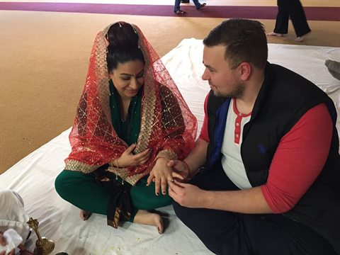

The story page should feel like an archive chapter, not a separate Bootstrap-era page.
Existing art can become a chapter image instead of a rounded Bootstrap portrait.
Our Story
This prototype keeps the existing story route but gives the page a calmer reading shape: a chapter image, editorial text width, and fewer competing UI treatments.
The production pass can preserve the current story content while converting the surrounding layout to the same journal system used on the home page.
Implementation note: keep this as static HTML and avoid introducing a template system in the first hardening sprint.
Existing route: gallery.html
Photo Gallery
The generated gallery can share the journal language while staying static and metadata-driven.
Wedding Archive
Sample generated album
Hero
Together
Generated thumbnails can sit inside the same journal card pattern.
Memory
Wedding Memory
Captionless photos still work because a title can carry the card.
Archive
Wedding Day
The production renderer can reuse this look without changing the data contract.

Weekend
Weekend
Album cards should remain static links/buttons in production.
Detail
Floral Detail
Small detail photos help the gallery feel like an album instead of a file dump.
Detail
Golden Rose
The grid should scale to real photos after curation without new visitor-facing features.
Prototype boundary: this page does not rebuild the lightbox. It tests whether the generated gallery can visually join Variant C while preserving static behavior.
Existing route: contact.html
Archive Info
The old contact page can become a clear no-collection information page.
No Collection
This archive does not collect RSVPs, addresses, messages, uploads, comments, or accounts.
Static Archive
All public content is served as static HTML, CSS, JavaScript, and optimized image assets.
Wedding Weekend
Event details can remain as historical context without sounding like active planning tasks.
Private Originals
Original photos and curation notes stay local; only public web-sized outputs belong on the site.
Existing route: hotels.html
Suggested Hotels
Hotel information should read as preserved wedding-weekend context, not as a live booking guide.
Sangeet anchor
Hotel Syracuse
Preserve the place memory and move current booking details into a secondary link or historical note.
Downtown context
Jefferson Clinton
Keep lodging distance/context readable without depending on live rates.
Travel note
Courtyard Marriott
Cards reduce table clutter and match the archive journal tone.
Existing route: syracuse.html
Syracuse Context
Local entertainment can become a visual memory/context page with safer historical framing.
Local memory
Downtown
Use descriptive captions instead of image-only thumbnail links.
City context
Clinton Square
The page can still point outward, but the archive should not depend on those links being current.
Weekend guide
Explore Syracuse
Cards make the travel context easier to scan on desktop and mobile.
Requirements readout
What This Prototype Proves
Variant C can cover the existing page set if production work uses two patterns: a landing journal and interior journal pages.
REQ-001 to REQ-006
Static archive pages
The design supports a home entry, internal navigation, deploy-safe assets, mobile stacking, and readable core content.
REQ-007 to REQ-011
Historical context
Hotels, Syracuse, and Info can become archive chapters without reviving active contact or booking workflows.
REQ-012 to REQ-018
Publish safely
The prototype uses no backend, no build step, no form, and no external runtime dependency.
REQ-021 / REQ-031
Gallery alignment
The gallery can visually join Variant C while preserving generated static assets and lightbox behavior as production responsibilities.
REQ-032
Hero decision
A fixed known-good hero best preserves the accepted Variant C look until real photo curation proves a rotating hero set.
Open risk
Browser review
This prototype still needs visual review in a real browser before production implementation is accepted.